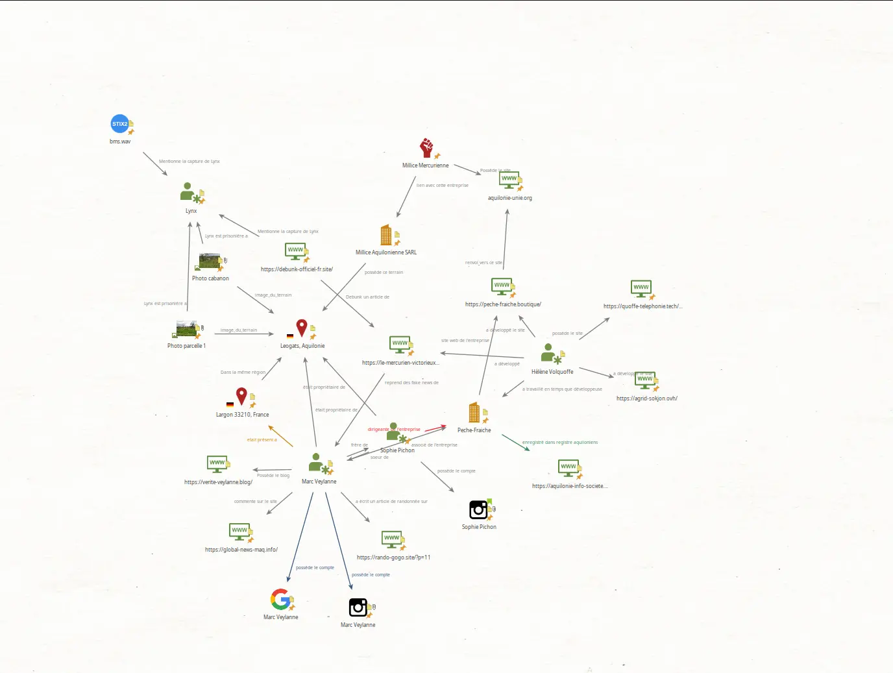

bellatrix
★ COMCYBER CTF Bellatrix Finisher — top ~1.5%
Operation Bellatrix — COMCYBER CTF · ORION 26
Operation Bellatrix (COMCYBER + CIAE, ORION 26, 23–27 March 2026) was a national CTF built around a fictional influence campaign and the search for a downed pilot. The event mixed disinformation analysis, technical attribution, and OSINT / GEOINT across three days.
This page is a personal result sheet and theme map only: no flags, no solutions, no challenge write-ups.
01. day 1 — analysis / disinformation
- Bienvenue — Event onboarding · framed the fictional influence scenario and mission rules.
- Un message d'alerte — Open web / SOCMINT · checked an alert-style claim against public posts and context.
- La vidéo du sauvetage — Open media · assessed a rescue video for authenticity signals (source, framing, reuse).
- Trop beau pour être vrai — Fact-check · compared a feel-good narrative with corroborating public traces.
- Au service d'une cause — Narrative mapping · identified which cause / framing the content served.
- Rétablir la véracité des faits — Fact-check · rebuilt a cleaner timeline of what public sources actually support.
- Identifier le primo-diffuseur — SOCMINT · traced who first pushed a piece of content into the open web.
- Une metadata vaut mille images — Image forensics · read embedded metadata / technical clues on a published image.
- (Dé)-Crédibiliser l'information — Influence analysis · mapped how credibility was built or attacked around a claim.
- Cyber-physique ! — Cross-domain · linked an online narrative to a claimed physical-world effect.
- Analyser l'attaque — Info-ops analysis · characterized the shape of the influence wave from public signals.
- Mesurer l'attaque — Metrics · estimated reach / timing / volume of the public info-ops activity.
02. day 2 — technical attribution
- Attribution technique — Infra pivot · started linking public technical artifacts to the influence trail.
- Surveillance du réseau social — SOCMINT · monitored suspect accounts / posts for operational patterns.
- La piste de l'organisation — Org mapping · followed public breadcrumbs toward a controlling structure.
- Fouiller le site — Web recon · browsed / enumerated a suspect site for useful public structure.
- Nos réalisations … — Content review · mined a “showcase” page for reusable clues about the actors.
- La piste du financement — Follow-the-money (public) · looked for open traces of how activity was funded.
- Analyse WHOIS des domaines suspects — Open registries · pulled WHOIS / registration history on suspect domains.
- Découverte de preuves cachées — Web artifacts · recovered less-obvious public files or leftovers on sites.
- Les Wordpress d'Hélène Volquoffe — CMS footprint · correlated WordPress sites tied to the same developer trail.
- La temporalité de l'attaque — Timeline · ordered public technical and narrative events on a shared clock.
- Réutilisations de code sur les domaines — Code reuse · spotted shared snippets / fingerprints across domains.
- Déclenchement immédiat — Trigger analysis · studied how the wave was kicked off from public signals.
03. day 3 — OSINT & GEOINT
- OSINT — Open-source pivot · framed the pure OSINT / GEOINT leg of the investigation.
- En chemin pour une partie de pêche — GEOINT / local · used open geo and local clues along a travel / fishing trail.
- Remonter la piste — Link analysis · chained people, places and sites from open sources.
- Les archives au secours — Web archives · recovered older public copies when live pages were thin.
- Le plein trop cher — Local OSINT · used a mundane cost / fuel-style clue as a geographic pivot.
- Localisation de "Lynx" — GEOINT (main plot) · pinned the fictional captive using open imagery and cadastral-style clues.
- On se rapproche — GEOINT refine · narrowed the search area with additional open geo signals.
- Temps incertains — Temporal OSINT · reconciled conflicting public timestamps around the endgame.
04. themes
05. link graph

Personal link-analysis sketch of fictional Bellatrix entities — people, sites, orgs and places tied together from open clues. No CTF handle on the page.
- Marc Veylanne — central persona; owns blogs/accounts; tied to places and commentary sites.
- Sophie Pichon — linked relative / business lead around the fishing company thread.
- Peche-Fraiche — company + boutique site; registered in the fictional Aquilonie register.
- Hélène Volquoffe — developer trail linking several suspect WordPress / tech domains.
- Milice Aquilonienne / Mercurienne — org + site cluster owning / related to the Leogats land.
- Lynx — plot endpoint; graph marks captivity clues against Leogats photo / parcel nodes.
- Leogats, Aquilonie — geographic hub connecting land ownership, photos and the Lynx thread.
- Largon 33210 — regional presence anchor linked to Marc on the sketch.
06. disclaimer
Flags and solutions are withheld per COMCYBER CTF rules. Challenge titles listed are personal solves only; no third-party write-up content is reproduced.